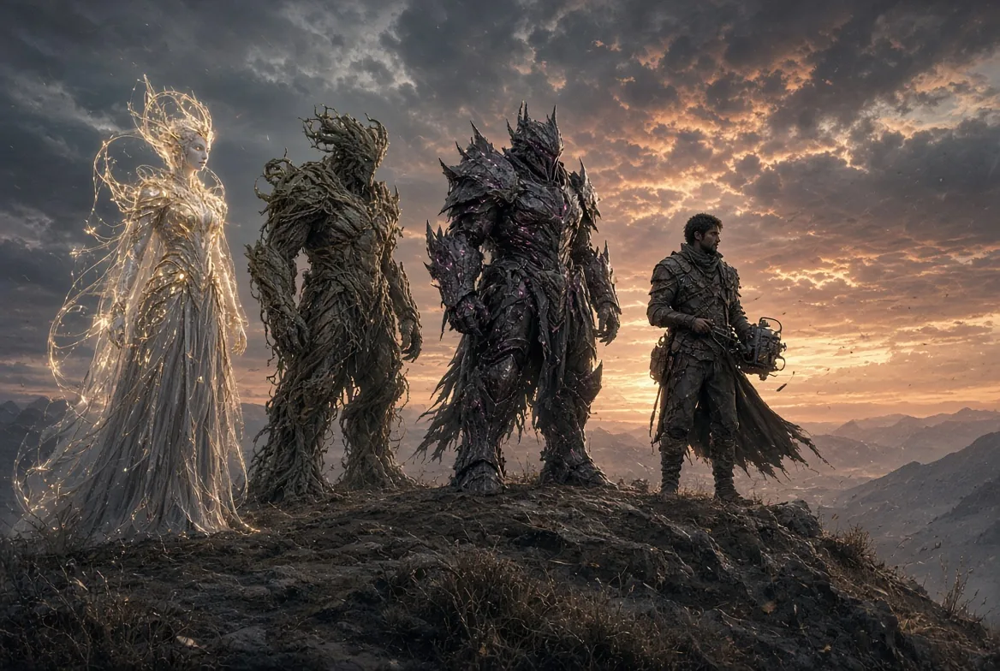

About
Sherif Botros, founder and current steward, has run the company solo since November 18, 2025.
Read about the company
Established 2016
Autonomicity Games Inc. is stewarded by its founder, Sherif Botros. The name has been a play on AGI since 2016.
Canada
Autonomicity Games was founded in Canada on March 17, 2016.
Five peoples share an ever-evolving world: Human, Quellorian, Draek, Cydruid and Ambrosian.
A post-apocalyptic world with a resource-based economy and a faction system that lets you be as diplomatic as you like.
Powrush has been under development since 2016 by Autonomicity Games.
Open World Experience — Craft your unique story and quests by organically flowing through your desires.
Freedom of choice to be peaceful, or to start wars.
Offline single-player build in active development. Online is not live yet. No Steam page and no release date.
These paintings are concept art and trailer art. They are not gameplay, and they are not screenshots of the current build.


Sherif Botros, founder and current steward, has run the company solo since November 18, 2025.
Read about the companyOffline single-player build in active development. Online is not live yet. No Steam page and no release date.
See the game statusA separate site on purpose.
Open the Rathor.ai noteAutonomicity Games plans to hire, executives included.
How to writeEmail info@acitygames.com or info@Rathor.ai.
Contact details